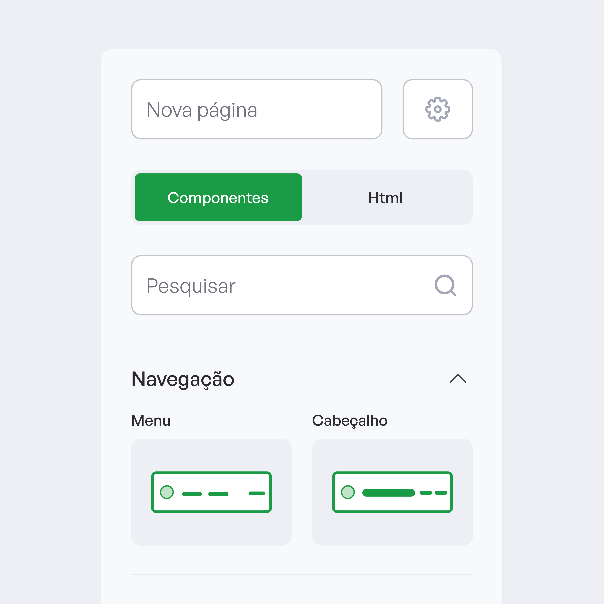
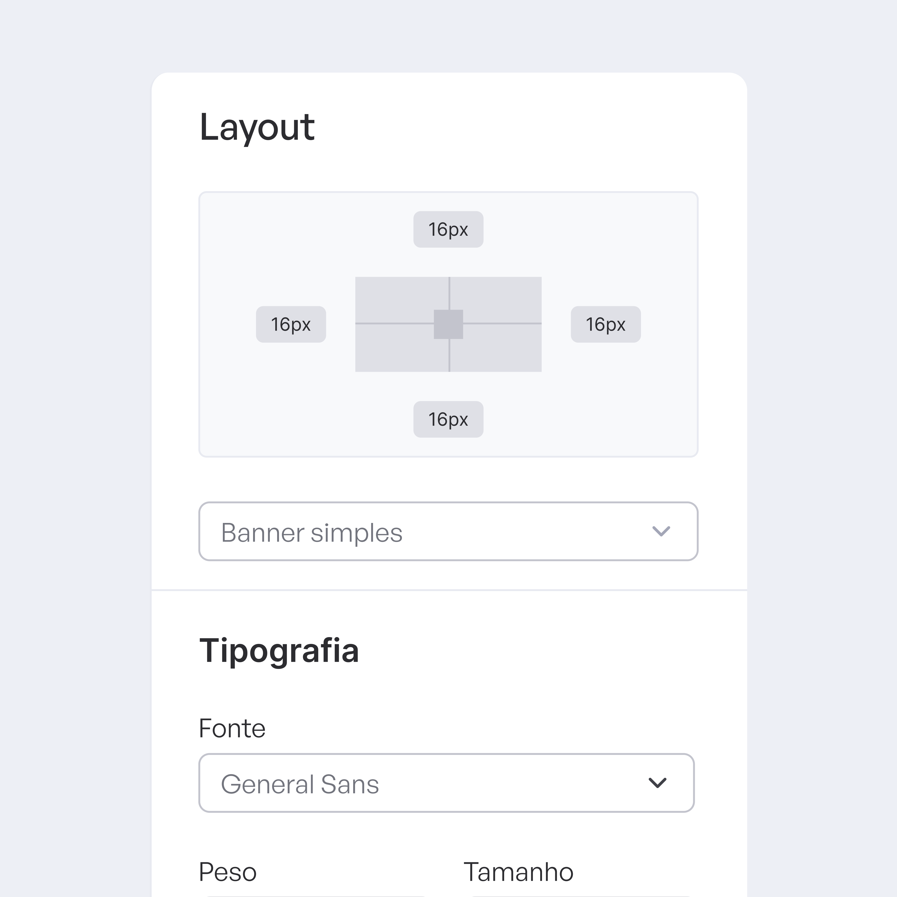
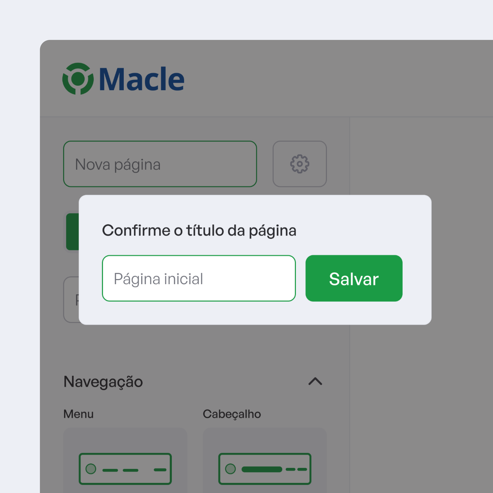
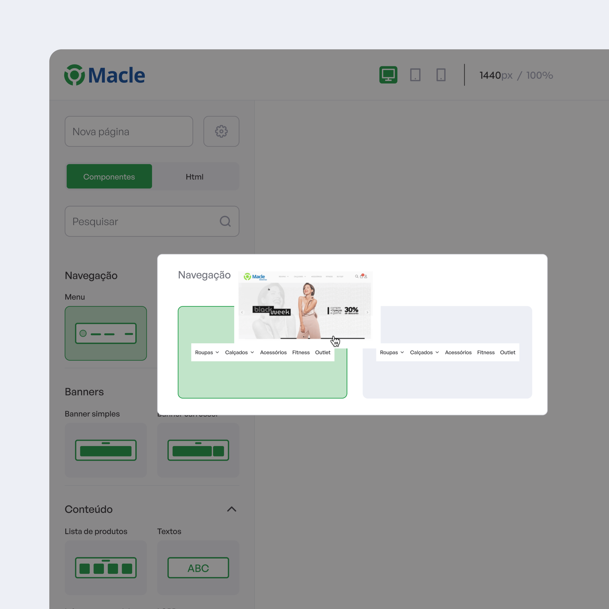
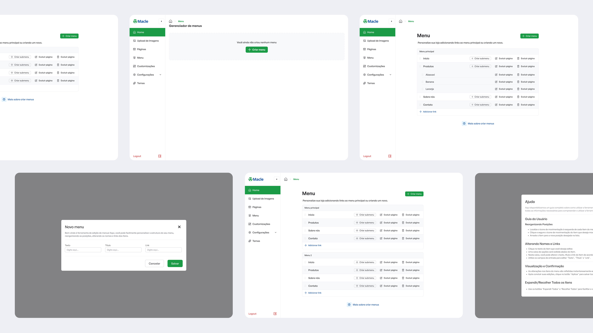
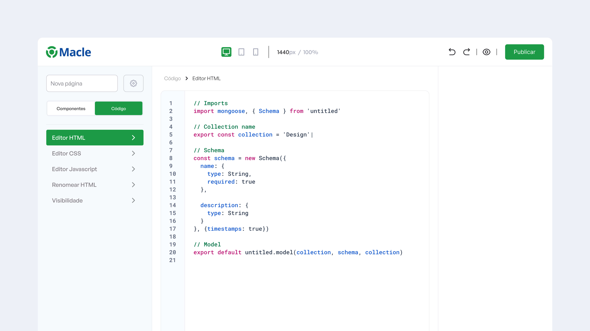

Simplificando a criação de sites

- Cliente
- Macle Sistemas
- Ano
- 2024
- Tipo
- Construtor de sites
- Role
- UX/UI Design
O cenário
A Macle possuía um ERP voltado para gestão empresarial e, dentro do ecossistema da plataforma, oferecia um construtor de sites como funcionalidade exclusiva para assinantes. A proposta da ferramenta era permitir que clientes criassem e gerenciassem seus próprios sites de forma simples, integrando presença digital e operação em um único ambiente. Mais do que um recurso complementar, o builder funcionava como parte da estratégia de valor do produto.



O que o VulpiStudio precisava resolver
Nosso objetivo era o de evoluir a usabilidade da ferramenta para tornar a criação de sites mais intuitiva, eficiente e menos dependente de esforço operacional do usuário. A oportunidade não estava apenas em simplificar fluxos e reduzir fricções, mas em transformar o construtor em uma solução robusta, capaz de apoiar melhor os nossos clientes.
Para isso, o desafio envolvia equilibrar simplicidade e capacidade, tornando a experiência mais acessível para usuários com diferentes níveis de familiaridade técnica, sem comprometer a flexibilidade da ferramenta.


Hipótese de solução
Partindo dos principais pontos de fricção identificados na jornada, a hipótese foi que uma experiência mais intuitiva, com fluxos simplificados e maior clareza nas interações, poderia reduzir a complexidade de uso do construtor e ampliar o valor percebido da ferramenta dentro do ERP.
A proposta era tratar o construtor não apenas como um recurso complementar, mas como uma experiência mais estratégica, capaz de aumentar autonomia dos usuários.

Como implementamos a solução
A implementação focou em evoluir os pontos mais críticos da jornada de criação, priorizando melhorias com maior impacto para usabilidade e adoção. A solução foi construída de forma progressiva, equilibrando necessidades do usuário, viabilidade técnica e objetivos do produto.
Esse processo envolveu reestruturar fluxos, refinar padrões de interação e construir uma experiência mais consistente, buscando transformar o builder em uma ferramenta mais acessível, robusta e preparada para evolução.

E esses foram os resultados
O redesign gerou impactos mensuráveis na experiência e na adoção da ferramenta, contribuindo para uma redução de 32% nos chamados ao suporte técnico relacionados ao builder e um aumento de 41% no número de sites publicados na plataforma. Além disso, a evolução da experiência ajudou a tornar a jornada mais eficiente, com ganhos em autonomia dos usuários e maior uso do recurso.